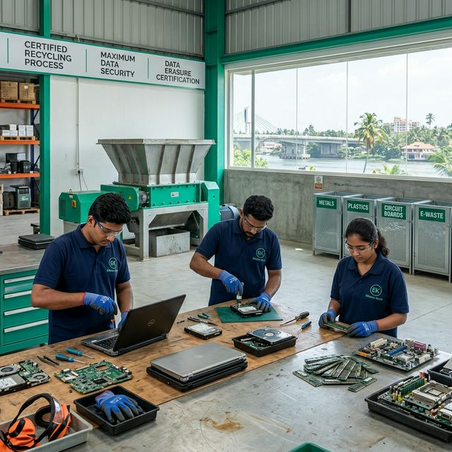

🚚 Free Pickup Across Kochi | 🔒 Certified Data Destruction | ⭐ Kerala PCB Authorized Service
Discover the most secure, compliant, and environmentally friendly way to dispose of electronic waste. Whether you are a top IT firm at Infopark or a homeowner in Ernakulam, our complete e-waste recycling framework ensures zero landfill and maximum data security.
The rapid growth of the IT sector in places like Kakkanad and SmartCity has made electronic waste disposal in Kochi a critical environmental and data security challenge. Proper e-waste recycling in Kochi is no longer optional—it is mandated by India's E-Waste Management Rules, 2022 and enforced by the Kerala State Pollution Control Board (KSPCB).
As Kerala's most trusted partner, EWaste Kochi simplifies the handling of end-of-life electronics. From our comprehensive IT asset disposal Kochi framework designed specifically for corporate enterprises, to accessible consumer recycling programs, we provide an end-to-end umbrella of services. Our zero-landfill promise means every motherboard, battery, and screen is systematically dismantled and reintroduced into the circular economy.
If you're asking how to recycle electronics in Kochi, the answer is simple: demand certified practices, ensure secure data destruction, and work with an authorized facility like ours.
We don't just "take junk." We handle highly specific electronic lifecycle management designed around your precise corporate or residential needs in Kerala.
We expertly decommission servers, SANs, networking gear, and PBX systems. This service provides full asset manifests and corporate IT e-waste management compliance logs.
Disposal of bio-medical diagnostic electronics, old imaging workstations, and patient-data bearing devices with strict NABH-compliant data purging.
Retiring ATMs, teller workstations, and financial servers. RBI-aligned hard disk crushing and certificate of destruction generation.
Safe processing for personal and corporate laptops. If working, we provide competitive laptop buyback pricing based on real secondary market values.
Fair, transparent valuation of heavily damaged desktop and PC scrap. Extracted resources are refined ethically without toxic informal burning.
Scrapping base stations, switches, and large-scale cable deployments for telcos across the Ernakulam district.
Our IT asset disposal services in Kochi help businesses manage end-of-life hardware securely.
Individuals and bulk corporate users rely on our laptop recycling solutions for safe disposal.
We provide hyperlocal e-waste recycling services across Kochi and the broader state, ensuring fast response times and deep regional expertise.
Serving Infopark Phase 1 & 2 and SmartCity IT companies with rapid corporate pickups.
Fast residential & retail pickup near Lulu Mall area and NH Bypass.
Comprehensive coverage spanning MG Road, Marine Drive, and all commercial hubs.
Industrial zone coverage, servicing KINFRA and regional telecom expansions.
Rapid response for both residential and corporate areas around the mobility hub.
Supporting media houses, local businesses, and regional server deployments.
Servicing the heritage zone, hotels, and tourism business electronics ethically.
Our central authorized facility. Drop-offs welcome anytime during business hours.
We also serve all nearby regions across Kerala. Book your pickup now →
We do not operate as an informal scrap trader. Operating within strict frameworks, EWaste Kochi possesses formal KSPCB authorizations. Corporate entities tracking ESG (Environmental, Social, and Governance) goals utilize our detailed green accounting reports.
Real Process Documentation: We issue a globally recognized Certificate of Destruction (CoD) detailing make, model, and serial numbers. This is your shield against potential breaches under the Digital Personal Data Protection (DPDP) Act, 2023.
Our Real Facility: You are welcome to audit our operations in Thrippunithura. We don't just broker waste; we process, dismantle, and systematically recycle it with transparent downstream auditing.
View Our Credentials
A transparent, linear process designed to isolate data risks and maximize environmental recovery.
Contact us via WhatsApp or phone. We deploy a verified logistics team to your premises. For corporate clients, this includes asset tagging straight from your storage closet, ensuring chain of custody begins immediately.
Devices are secured in locked transport bins and driven directly to our Thrippunithura facility. Escorted transport options are available for highly sensitive data workloads from financial institutions.
Every asset is audited. Serial numbers are scanned into our central management system. Items are categorized into three streams: Data Destruction, Remarketing (Buyback), or Pure Materials Recycling.
Storage media is extracted. Depending on client preference, drives are either subjected to multi-pass cryptographic erasure via software (NIST 800-88 Purge) or physically shredded to 2mm particles.
Hardware is broken down to raw components (PCBs, plastics, copper, steel). Toxins like lead glass or old batteries are isolated and sent to highly specialized metallurgical smelters authorized by the CPCB.
Within 48 hours of processing completion, clients receive digital and signed Certificates of Destruction, a Sustainability Impact Report, and financial settlements for any buybacks.
Many informal scrap dealers in Kochi collect electronics but do not follow proper recycling standards, leading to massive environmental damage and catastrophic data theft risks. Here is the reality.
| Evaluation Factor | EWaste Kochi (Authorized) | Local Scrap Dealer |
|---|---|---|
| Data Security | ✅ Certified NIST 800-88 Wiping / Shredding | ❌ None. Drives resold with viable data. |
| Legal Compliance (DPDP Act) | ✅ Absolute Compliance. Liability effectively transferred. | ❌ Illegal. Leaves you liable for ₹250 Cr fines. |
| Environmental Safety | ✅ Zero Landfill. Closed-loop scientific dismantling. | ❌ Toxic acid burning, illegal dumpings in backwaters. |
| Official Documentation | ✅ Certificate of Destruction (CoD) tracking serials. | ❌ Cash handshakes only. No audit trail. |
| Transparent Buyback Rates | ✅ Live secondary electronics market indexing. | ❌ Valued solely by weight of raw plastic/metal. |
Choosing a certified recycler protects your brand reputation, your data, and the pristine ecology of Kerala.
People look for e-waste services in hundreds of different ways. No matter what you search for, EWasteKochi provides a fully localized, compliant solution.
We've answered the most common questions regarding IT disposal, data security, and Kerala-specific compliance.
View All FAQsWe believe in educating our clients. Watch our knowledge base for upcoming guides on local regulations and best practices.
Book your certified e-waste pickup in Kochi today. Secure, compliant, fast.